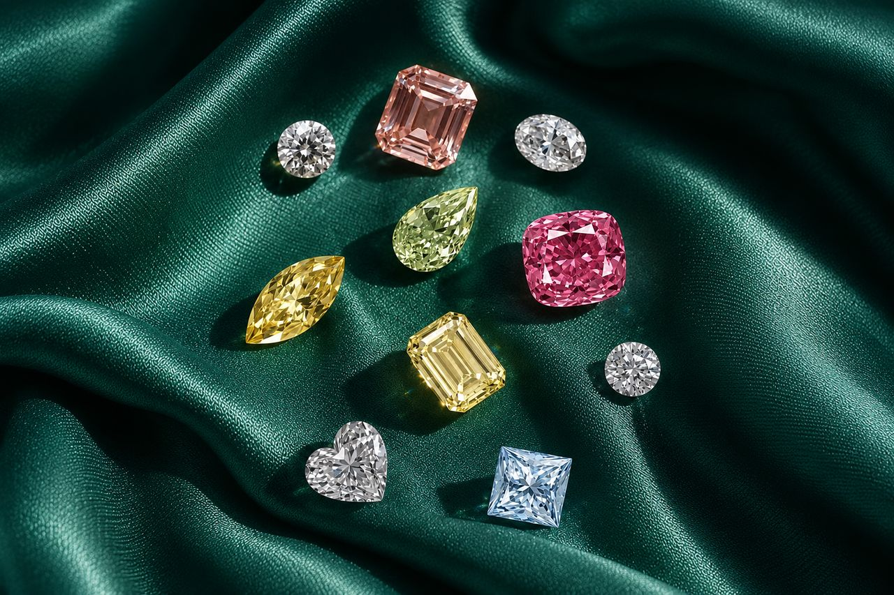
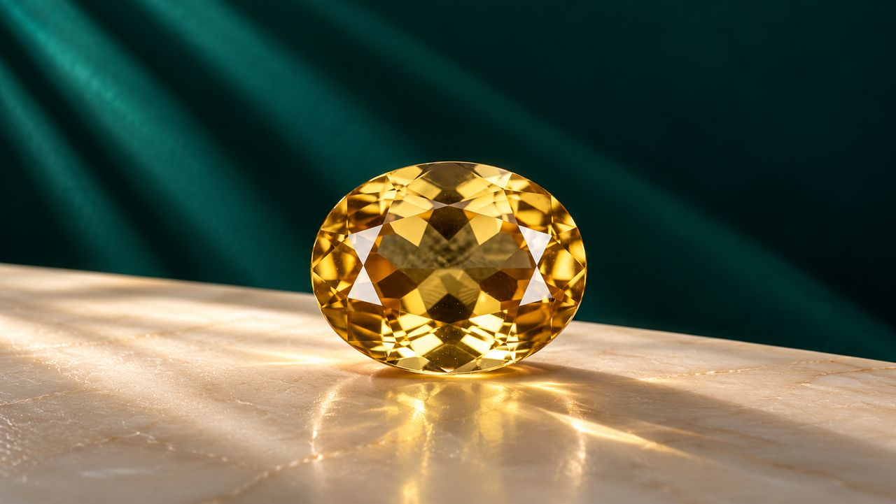
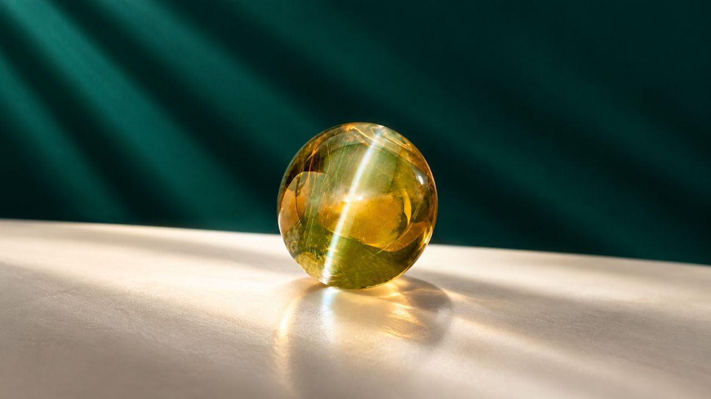
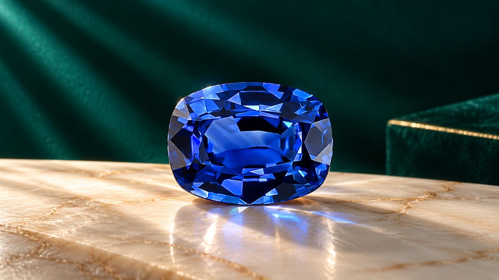
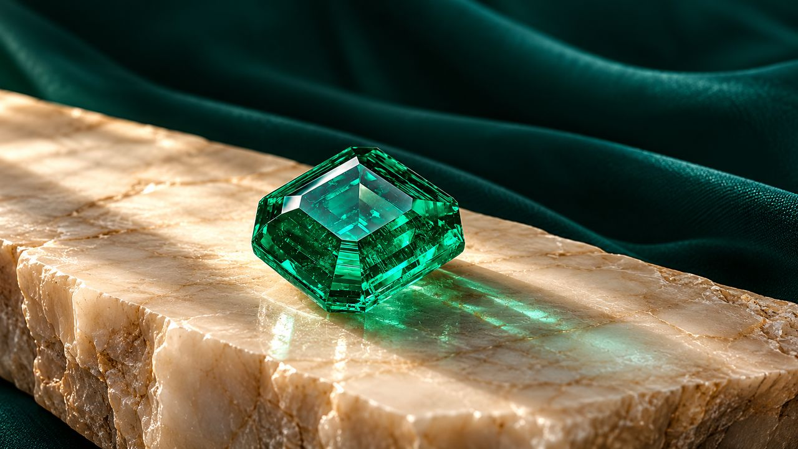
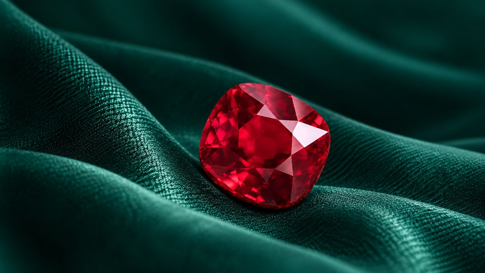
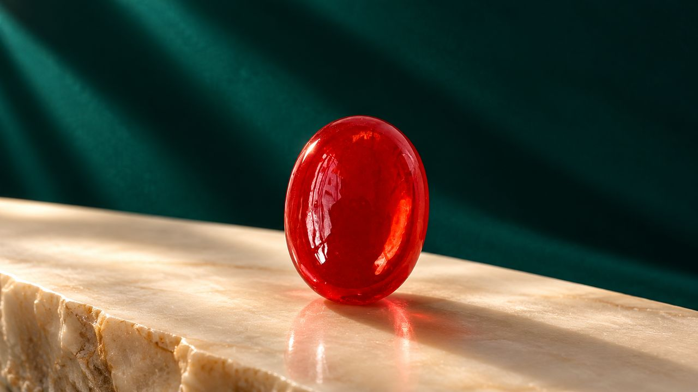
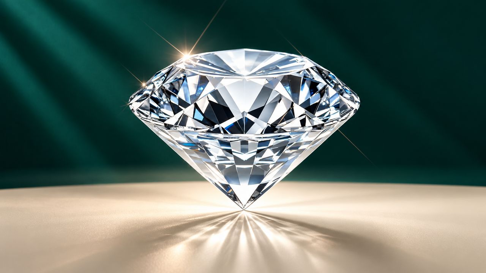
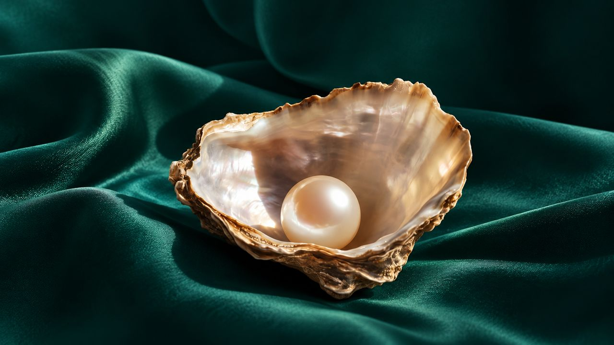
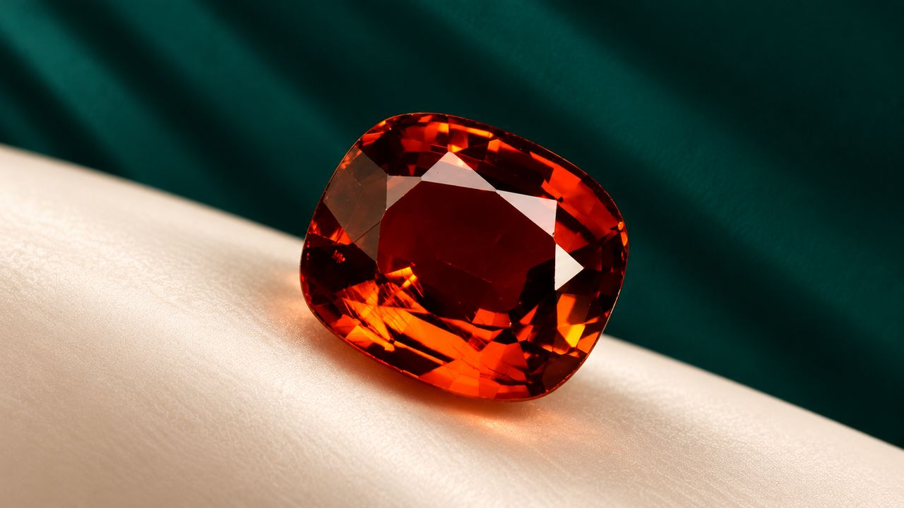

The Language of Stones

The warmth of imperial gold.
Golden gemstones have long symbolized sovereign warmth and celestial radiance. Masterfully cut with brilliant kite and star facets, this oval stone gathers ambient light and disperses warm amber refractions across polished ivory marble.

Luminous optical wonder.
Revered through antiquity as protective talismans, golden chrysoberyl spheres exhibit exquisite chatoyancy. A sharp, concentrated band of light glides across the curved dome as illumination shifts, revealing nature's optical mastery.

Sovereign depth and royal blue.
From papal rings to the coronation crowns of royal dynasties, blue sapphires have embodied nobility, wisdom, and steadfast devotion. This cushion-cut gem reveals velvety saturation and profound celestial depth upon veined marble.

The signature of living earth.
Formed in the earth's crust over millions of years through hydrothermal cooling, the emerald owes its vivid green to chromium and vanadium. Cut in classic step facets upon raw crystalline marble, its natural jardin confirms authentic origin.

Vivid pigeon's blood crimson.
Hailed as the king of gems, the finest ruby unites intense red saturation with fiery natural fluorescence. Nestled within pleated emerald velvet, this faceted cushion cut radiates an incandescent glow that commands high-jewellery architecture.

Smooth cabochon purity.
Before the advent of geometric faceting, ancient artisans shaped precious corundum into smooth cabochons to honor sheer color density. Standing upright on ivory marble, this oval cabochon displays rich, uninterrupted crimson depth.

Crystalline light and pure dispersion.
The brilliant-cut diamond represents the zenith of optical lapidary science. With mathematically proportioned facets engineered to return total internal light, it fractures white illumination into dazzling spectral fire against emerald silk.

The soft orient of marine nacre.
Unlike geological crystals mined from the earth, the pearl is an organic treasure nurtured within marine oysters. Nestled upon deep emerald satin, its spherical surface emanates a soft, glowing orient and timeless maternal elegance.

Incandescent mandarin fire.
Celebrated for extraordinary refraction without thermal enhancement, spessartite garnet blazes with incandescent amber-orange intensity. Set against ivory satin and emerald drapery, this cushion cut radiates electric warmth and vibrant energy.
A symphony of cut and colour.
Bespoke fine jewellery houses require diverse gemological suites matched with precision. From fancy yellow and pink diamonds to fancy-shaped morganite and radiant cuts, this curated assembly demonstrates Facette & Co.'s sourcing and manufacturing versatility.